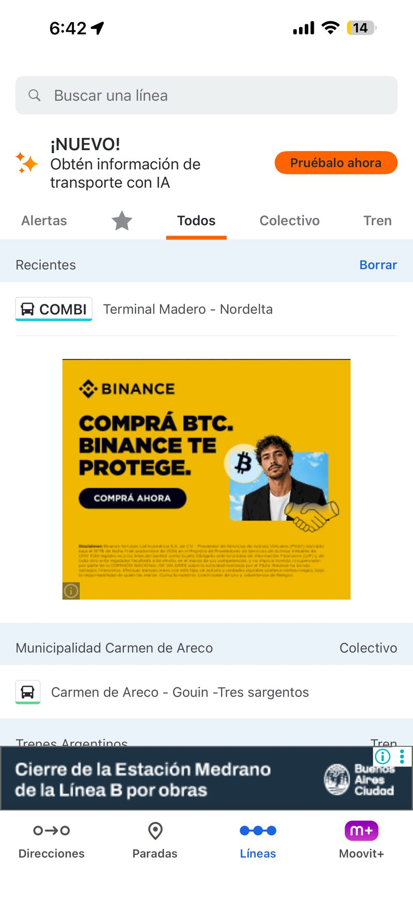

01

Pantalla · LíneasLey de Jakob
Cumple"Los usuarios pasan la mayor parte del tiempo en otros sitios, y prefieren que el tuyo funcione igual que los que ya conocen."
La barra de navegación inferior (Direcciones, Paradas, Líneas, Moovit+) replica el patrón estándar de apps de mapas y transporte que el usuario ya conoce (Google Maps, Citymapper). Al no tener que aprender una estructura nueva, la navegación resulta predecible desde el primer uso.